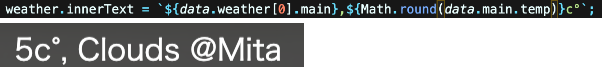
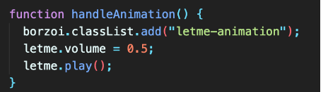
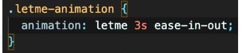
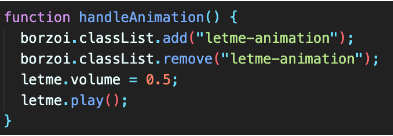
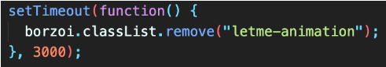
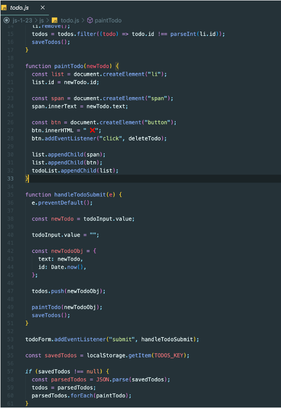
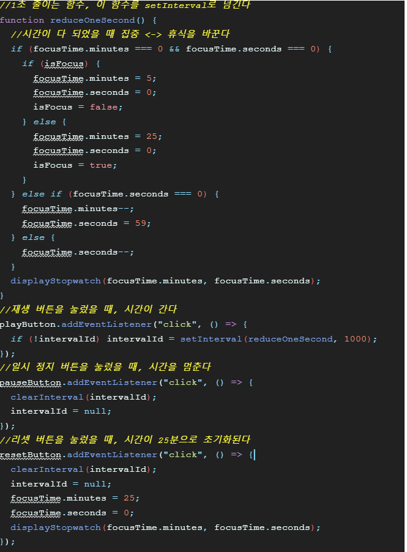
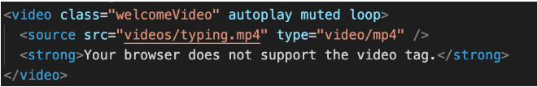
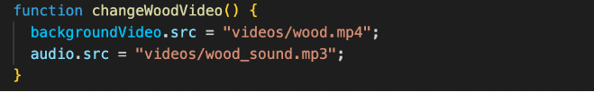

프리츠
주제 및 컨셉
요즘 유행중인 보르조이 밈을 활용한 투두리스트어려웠던 점과 극복 방안
날씨의 API를 활용하는 코드에서, 온도를 나타내는 데이터가 temp:7.42
이런식으로 소수점 아래 자리까지 제공이 되는데, 저는 소수점을
떼어내고 정수만으로 쓰고싶었습니다. 그래서 어떻게해야 할지 고민을
좀 해봤는데 강의중에 Math함수에 대해 배운것을 활용해서
Math.round로 반올림된 정수를 가져올 수 있게끔 했습니다.

투두리스트를 만들거나 지울때, 애니메이션이 작동되도록 function을
만들고싶었는데, 이게 첫번째에는 잘 작동하지만 한번 애니메이션이
작동하면 두번째 이후 투두리스트 관련 액션을 할때 애니메이션이
작동이 안되더군요.


이런식의 애니메이션은 한번밖에 작동이 안되기 때문인데, 그래서 이
클라스네임을 넣었다가 바로 빼는 식으로 하면 어떨까 라고 생각을
해봐서 이렇게 바로 클라스를 지우게끔 코드를 해도, 작동이
안됐습니다

그래서 방법을 알아보니까, 이런식으로 타임아웃을 설정하면,
애니메이션이 끝나는 타이밍에 클라스를 지울 수 있더라고요. 제가
설정한 애니메이션의 길이가 3초여서, 타임아웃에서도 3000ms을
설정했습니다.

민서
주제 및 컨셉
제가 찍은 사진은 아니지만 제 친구 중에 사진을 잘 찍는 친구가 있어서 그 친구의 사진들을 랜덤 배경화면으로 보여주는 형식으로 제작했습니다. 디자인을 어떻게 할까 계속 고민하다가 결국 시간에 쫓겨 디자인적 요소를 많이 넣지 못해서 아쉬웠습니다.어려웠던 점과 극복 방안
왼쪽에 시간과 이름, 투두리스트를 배치하고 오른쪽에 명언과 날씨,
사진의 출처를 배치했는데 오른쪽의 요소들을 justify-contet:
flex-end;로 배치하니 투두리스트에 투두가 추가될때마다 오른쪽의
요소들이 자꾸 밀려내려가 위치가 고정이 안되어서 div로 감싸주고
position을 사용해서 위치를 고정시켰습니다.

sChalotte
주제 및 컨셉
파스텔톤의 개인 일기장 느낌으로 만들었습니다.어려웠던 점과 극복 방안
to-do list 단원부터 점점 개념들이 섞이면서, 실제 코드를 썼을때
어려움이 많았습니다. 개인적으로는 너무 많은 개념들이 한번에
들어와서 잘 정리가 되지 않았어요. 특히 비슷한 이름의 변수들을
생성하고 그것들을 함수에서 불러올때 정신이 없었어요. 다시 강의를
들으면서 정리를 해보고 있지만 아직 정리가 잘 되지 않아서,
졸업작품을 더 멋지게 꾸미고 싶었지만 개념이 제대로 잡혀있지 않아
응용을 거의 하지 못한것이 너무나 아쉽습니다. (예시: newToDo,
newToDos를 어떤곳에서 사용해야하는지가 아직은 많이 헷갈리네요.)
어떤 특정한 내용이 어려워서 그런것이 아니라서 개인적으로 공부를 더
많이 해야겠습니다.

이재현
주제 및 컨셉
강의 영상에 나온 기본적인 기능에다가 뽀모도로 타이머 기능을 추가하였다. 뽀모도로는 25분 집중하고 5분동안 쉬는 것을 반복하여 집중력을 길게 유지하는 방법이다. 개인적으로 효과를 많이 보아서 이 기능을 추가하였다.어려웠던 점과 극복 방안
다른 기능들은 대부분 강의 그대로 따라가면 어렵지 않았는데 뽀모도로
타이머 기능을 추가하는 것이 조금 헷갈렸다. clearInterval 함수를
처음 사용해서 이 부분이 조금 헷갈렸다. setInterval을 할 때 인터벌
아이디를 설정할 수 있다는 점을 처음에 몰랐었다. 그래서 처음에 mdn
문서에서 clearInterval 함수 설명을 볼 때 인터벌 아이디를 인자로
넘겨야한다는 말을 이해하지 못했다. 하지만 이해하고나니 어렵지
않았다.

kinajin
주제 및 컨셉
study with me 처럼 ASMR 소리를 들으면서 코딩을 할 수 있는 code with me 홈페이지를 만들었습니다. 한시간 동안 목표를 설정하고 countdown 하는 동안 열공하도록 도와주는 사이트입니다.어려웠던 점과 극복 방안
px 이 아닌 vh, em 같은 단위로 responsible design 적용.

html5 의 video tag 로 배경영상을 구현하였습니다.

다른 asmr 배경 영상과 음악을 원하면, 썸네일을 클릭하고 event
listener 로 click 할 경우 함수가 발생하고
해당 함수는 영상 태그의 src 와 오디오의 src 의 내용을 변경할 수
있도록 하였습니다.
